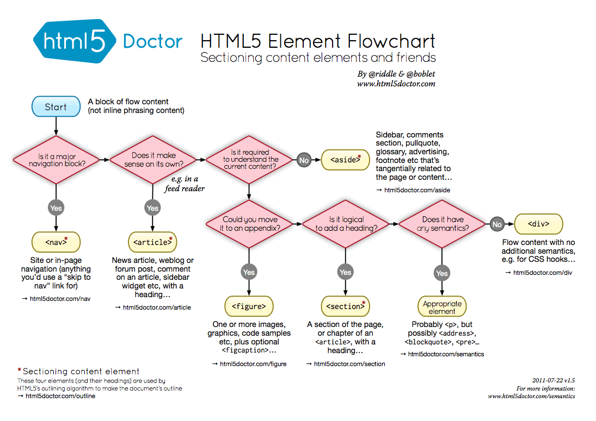
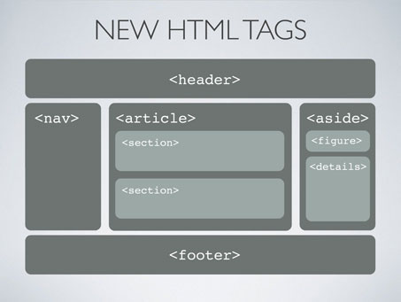

编码规范
规范之所以是规范, 它没有对错, 只是为了让所有人保持一致.
命名规范
kebab-case
- 目录名，文件名和哈希值：
[location.pathname && location.hash]
|
|
- 如果带版本，则文件名只写大版本（
v3），小版本体现在URI中（ver=3.1.2）；使用ver做变量，不要用version- 目录名和文件名全部小写且禁止加上复数形式
- 例如：orders -> order-list
- 文件名可以使用大驼峰；目录名最好使用子目录。尽量不要使用下划线
- 类名：
.kebab-case- ID名：
#kebab-case
snake_case
- 查询串：
[location.query]
|
|
- 表单名：
input[name='snake_case']。
|
|
json的key值
|
|
- 变量
- 常量（大写即可：
SNAKE_CASE） - 属性（$this->class_field）
- 参数（实参：
arum_case；形参：parm_case）
camelCase
- 函数（
functionCase） - 方法（
methodCase）
CamelCase
- 类 （
ClassCase）
mixed
.J_kebab-case注意：仅供JS使用，不在CSS中出现
格式规范
- [空格]：2个空格，不用4空格和
Tab - [插件]：
Sublime使用HTML/CSS/JS Pretty（Ctrl + Alt + H）和PHPFMT（开启PSR-1&PSR-2，ctrl+F11）来格式化即可；PHPStorm（WebStorm）使用Ctrl + Alt + L来格式化 - [引号]：如无特殊要求，代码中统一使用单引号，
HTML属性值使用双引号 - [URI]：
URI禁止使用相对路径，必须是绝对路径，且最好是//static.tugou.com/user/user-info.js形式的路径
动词规范（增删改查）
ViewAppendRemoveEditModify
ShowChange
ControllerPostDeletePutGet（最好用名词取代，代表各种资源）
ServiceandLogicAddDeleteSetFetch
ModelCreateDeleteUpdateRead
返回规范
|
|
布局规范


最佳实践
- 当你配置了
__get的时候，别忘了一并配置__isset
关于规范
- 关于文件名
- 域名的字符包含：26个英文字母、0-9的阿拉伯数字、英文输入下的“-”连词符
- 搜素引擎规范当中：“-”被当做“空格”，“_”被当做“空字符”（参考：关于URL连接符中是用下划线“_”好还是中杠“-”的问题剖析）
- 基于以上两点，推而广之，目录名和文件名等使用中横线来分隔
- 关于变量&&参数
- 数据库存储的时候，表名及其列名，约定俗称，使用“_”来分隔
- 数组、配置以及
JSON的键名，在大部分规范中都建议使用“_”来分隔 - 基于以上两点，所有的变量名和参数名均使用“_”来分隔
- 数组、配置以及
- 数据库存储的时候，表名及其列名，约定俗称，使用“_”来分隔
- 关于函数&&类
- 为了明确与变量区分，函数使用小驼峰
- 同上理由，类使用大驼峰
- 如此一来，只要看名称就能够了解这是一个变量还是函数还是类。
总而言之，规范不是大问题，没有规范才是。
PSR规范
PSR 是 PHP Standard Recommendations 的简写，由PHP FIG组织制定的 PHP 规范，是 PHP 开发的实践标准。
PHP FIG，FIG 是 Framework Interoperability Group（框架可互用性小组）的缩写，由几位开源框架的开发者成立于 2009 年，从那开始也选取了很多其他成员进来（包括但不限于Laravel, Joomla, Drupal, Composer, Phalcon, Slim, Symfony, Zend Framework等），虽然不是「官方」组织，但也代表了大部分的 PHP 社区。
项目的目的在于：通过框架作者或者框架的代表之间讨论，以最低程度的限制，制定一个协作标准，各个框架遵循统一的编码规范，避免各家自行发展的风格阻碍了 PHP 的发展，解决这个程序设计师由来已久的困扰。
目前已表决通过了 6 套标准，已经得到大部分 PHP 框架的支持和认可。
本项目的主要面向对象是所有参与的各个成员（也就是各自框架的社区），当然，同时也欢迎其它 PHP 社区采用本规范。